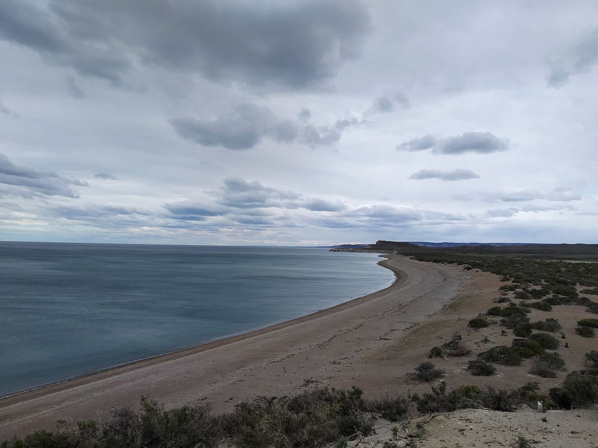
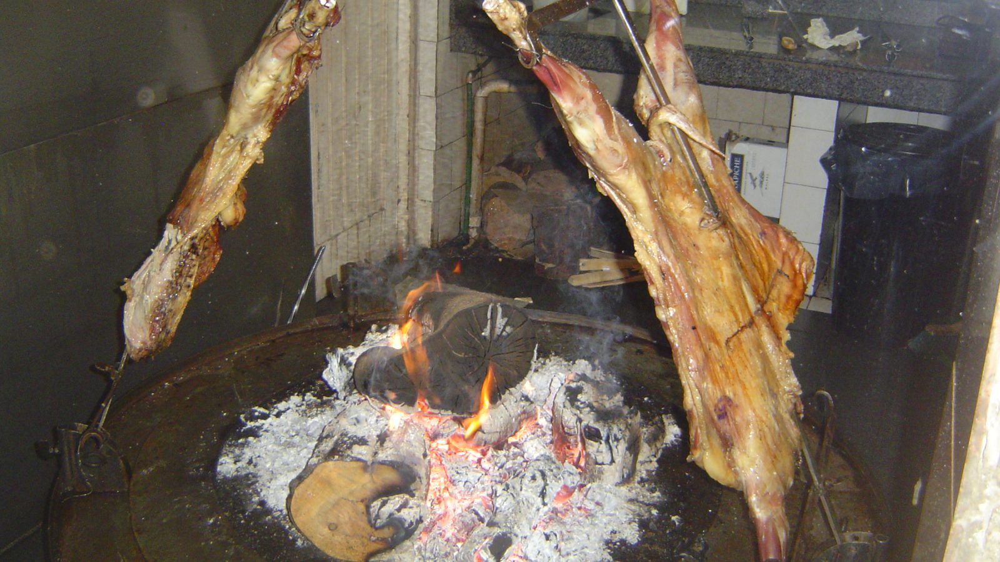
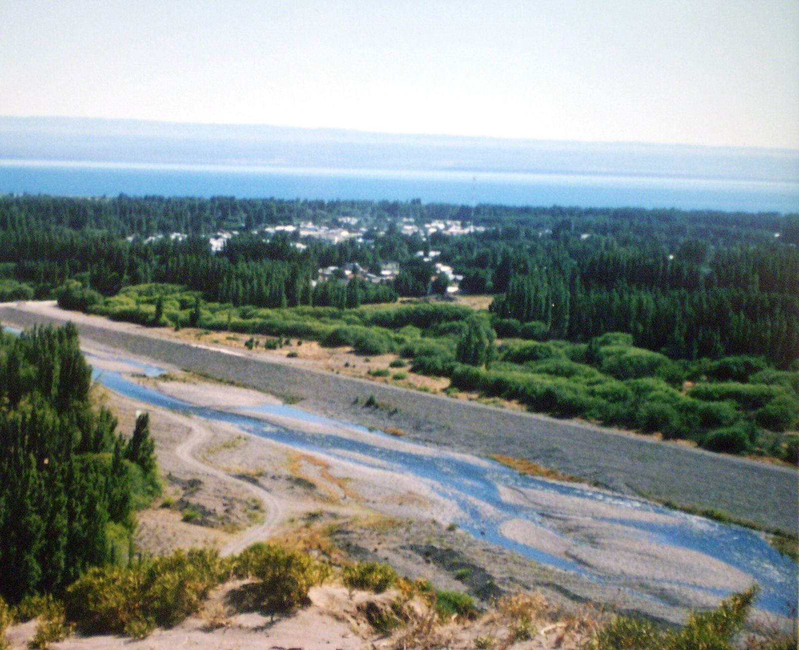
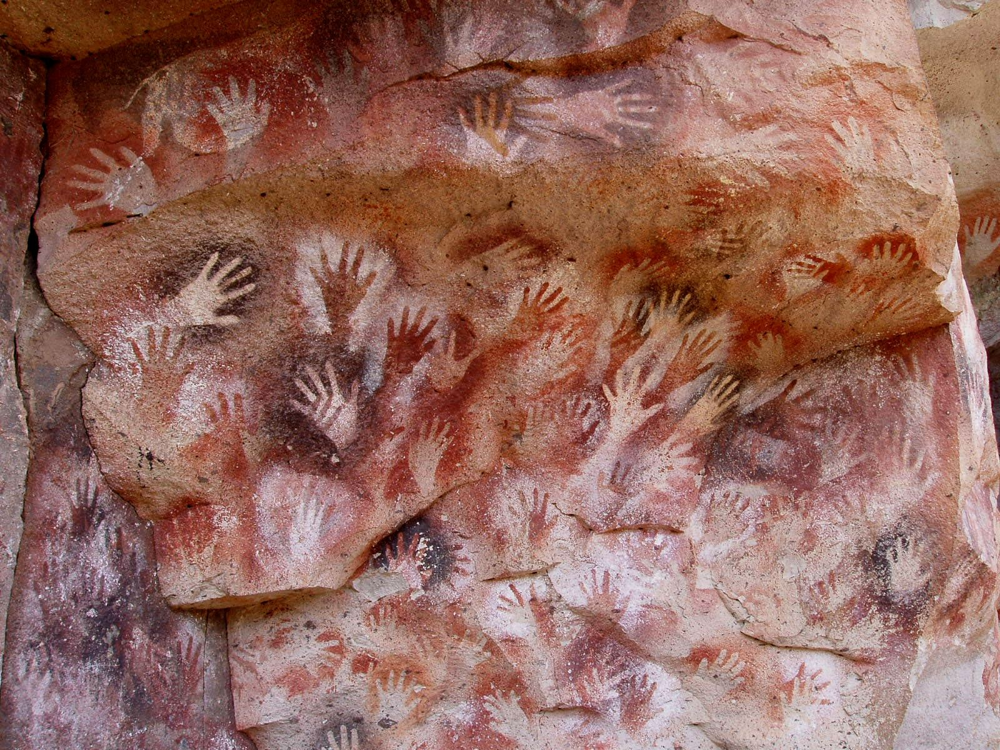
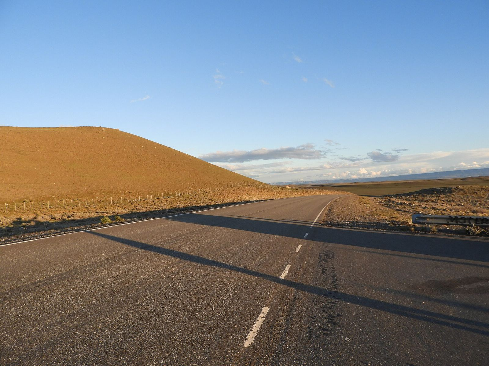
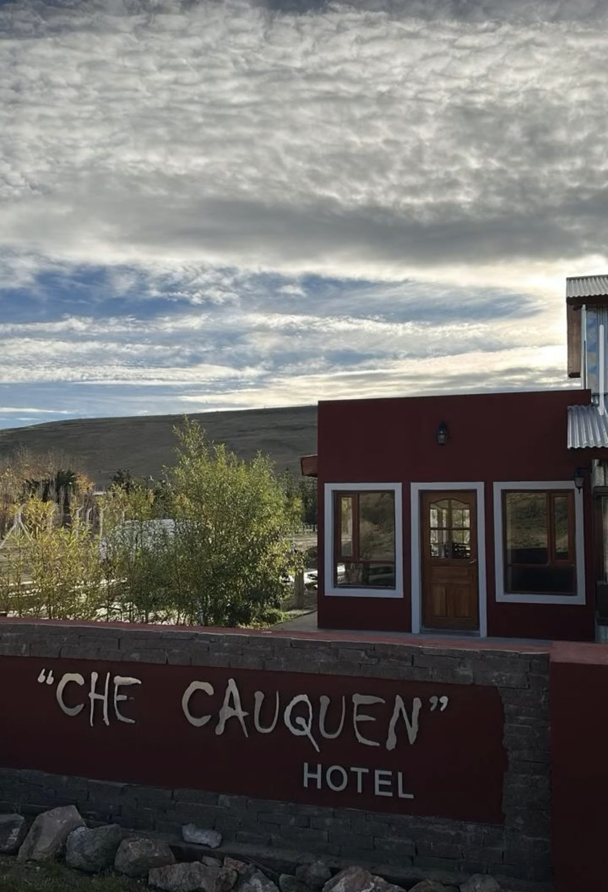

65 pages, 12 destinations, 5 maps and itineraries. ARS $15,000.See the guide

Travel guide · Province of Santa Cruz
All of Santa Cruz, from the Andes to the sea
Santa Cruz has glaciers, mountains to hike, hands painted thousands of years ago, stone forests, rockhopper penguins and the bay where Magellan spent the winter. We'll tell you how to get there.
Cover: Patagonian coast and steppe in Monte León National Park, Santa Cruz. Photo: Lara Fernández · CC BY-SA 4.0 · Wikimedia Commons
🧭
The whole province
From the Andes to the coast: destinations along Route 40, Route 3 and the provincial roads.
📚
Sourced
Every page cites its official sources and the date we checked them. For opening hours, prices and border crossings we link to the official source so you can confirm before you set off.
🏠
Made by locals
Written in Puerto San Julián, with local businesses and practical tips for road-tripping.
Latest articles
See all articles
Photo: Albasmalko · CC BY-SA 3.0 · Wikimedia Commons
Practical guide
What to eat in Santa Cruz: lamb, seafood, cherries and calafate
What to eat in Santa Cruz, Argentina: spit-roasted lamb, seafood from Deseado and San Julián, Los Antiguos cherries, calafate, and where and when to try them.

Photo: Christoph Strässler · CC BY-SA 2.0 · Wikimedia Commons
Practical guide
Border crossings from Santa Cruz to Chile: which ones there are, where they are and how to cross
Guide to the border crossings from Santa Cruz to Chile: Integración Austral, Casas Viejas, Dorotea, Cancha Carrera, Lago del Desierto, Roballos and Jeinimeni. Official hours and documents.

Photo: Mikelzubi · CC BY-SA 3.0 · Wikimedia Commons
Practical guide
Tourist estancias in Santa Cruz: where they are and what to do on a Patagonian ranch
Guide to tourist estancias in Santa Cruz: La Angostura, Laguna Verde, La Oriental, Telken and Monte Dinero. Where they are, what they offer, season and tips for going.

Photo: Murray Foubister · CC BY-SA 2.0 · Wikimedia Commons
Practical guide
How to get to Santa Cruz: flights, buses and roads to travel around the province
How to get to Santa Cruz, Argentina by plane, bus or car: airports and current flights, long-distance buses, national routes and key distances to plan your trip.

Destinations
See all
Photo: Gastón Cuello · CC BY-SA 4.0 · Wikimedia Commons
Coast · Route 3
Puerto San Julián
The bay where Magellan's expedition spent the winter of 1520 — today a small town on Route 3, with marine wildlife just minutes from the center.

Photo: Claudio Elias · Public domain · Wikimedia Commons
Northwest · Lake Buenos Aires
Los Antiguos
Cherry orchards on the shores of Lake Buenos Aires, a stone's throw from Chile. A rare microclimate in the middle of the steppe.

Photo: Mikelzubi · CC BY-SA 4.0 · Wikimedia Commons
North coast · Deseado estuary
Puerto Deseado
A 40 km estuary carved into the plateau, with dolphins and cormorants minutes from the harbor and rockhopper penguins out at sea.

Photo: Mariano · Public domain · Wikimedia Commons
Route 40 · Río Pinturas
Cueva de las Manos
Negative hand stencils, guanacos and hunting scenes painted in the Río Pinturas canyon. A World Heritage Site since 1999.
All destinations by region:
Puerto Deseado · Caleta Olivia · Pico Truncado · Las Heras · Jaramillo and Fitz Roy · Penguin Island and the Deseado Estuary · Cabo Blanco Nature Reserve · Koluel Kayke
Puerto San Julián · Monte León National Park · Puerto Santa Cruz · Comandante Luis Piedra Buena
Routes

Photo: Raf24~commonswiki · CC BY 4.0 · Wikimedia Commons
Route
Northern Route 40
From Perito Moreno south across the steppe: rock art, canyons and small towns with long distances between fuel pumps.

Featured businesses

Inn · Cabins
Hotel Che Cauquen
Av. Roca 1459, Puerto Santa Cruz · 24-hour reception
Hotel in Puerto Santa Cruz with rooms, an on-site restaurant and cabins. Reception is open 24 hours.
Phone and WhatsApp: +54 9 2962 40-9067
Photo: Hotel Che Cauquen
Hotel Che Cauquen is a Founding Partner of Santa Cruz Profunda. Have a business in the province? Add your business.
Frequently asked questions
What is Santa Cruz Profunda?
An independent guide to the province of Santa Cruz that covers the whole territory: the Andes and the glaciers, the Route 3 coast, Route 40 and the provincial roads.
When is the best time to travel?
For most destinations, spring and summer (roughly October to April). For example, trips to Penguin Island run from mid-October to April, and National Parks recommends visiting the Petrified Forests from November to April. Confirm dates before you travel.
Do I need a 4x4?
Not for the main roads, which are paved. Many access roads (RP 97, RP 49, RP 41) are gravel: a high-clearance car helps, and it's always worth checking with Vialidad Provincial.
Is the information up to date?
Every page cites its sources and recommends checking anything that changes often before you travel: opening hours, prices, dates and border crossings.
How do I add my business?
See the For businesses page for the available plans.